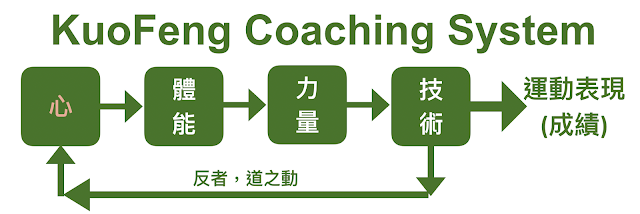

我的訓練哲學

前陣子剛結束RQ訓練營的廈門移地訓練，當地的朋友問我對自己個人的「定位」是什麼？我的志業是什麼？我毫不猶豫地說「研究耐力運動表現的理論與訓練法，幫助游泳、單車、跑步與鐵人三項運動愛好者變強」。現在，我又更有信心做到這件事，因為訓練的理論已經梳理清楚了。
我把耐力運動的科學化訓練邏輯定為「心→體能→力量→技術→運動表現」，框架搭好後，所有訓練法的內容、變化、強度與量的權衡都會跟著這個架構走。不只是跑步、游泳、騎車與鐵人三項運動都是如此。
五年多前我就對「心、體能、力量與技術」這四個元素有所理解，但又花了好幾年才能把它們的順序理清楚，把上述的「→」畫出來。
在這個訓練架構下，基本的原則有六點：
- 心在最底層，若無心訓練，體能、力量與技術的訓練再科學都沒用了。
- 體能與力量（體力）是基礎，沒有體力，沒有表現。
- 技術像是「竅門」，體力很好，竅門很窄，就無法有效輸出成更高水準的運動表現。想要開竅，必須刻意練習技術。
- 「技術」與「心」之間有著密切的連結，心愈穩定、愈平靜、愈安定，技術的水準就愈能開發出來。
- 速度、成績與名次都是結果，該結果要看淡，無須在意；須在意的是「訓練」本身，也就是練心、練體能、練力量與練技術。
- 「修復/恢復」是上述每一個環節都需要的，目標賽事想要有好的運動表現需要減量(Taper)來讓身體恢復、心/精神需要休息、體能與肌力都需要時間恢復，技術需要知覺，而知覺在訓練後也需要時間回到敏銳的狀態。恢復是訓練的一部分 (變強，是發生在休息/恢復之時)。
關於「返」的重要性：
「反（返）」的概念來自於老莊。老子說的「返樸歸真」、「復歸於嬰兒」與莊子所說的「坐忘」背後所傳達「重『新』再來一次」的哲理。教練如何讓運動員（或跑者如何讓自己）回到最初的地方，那是一種如同嬰兒般無知的渾混狀態，在訓練當下能忘掉過去的訓練，不去預期訓練會帶來的效果。因為那種「預期」的心理 ，反而無法帶來真正的效果。
運動員必須去用一種嶄新的心態來體驗動作本身所帶來的感覺，而不是去期待動作與訓練會帶來什麼的效果。訓練時要把課表與動作當成全新的（或是教練要引導學員把當天的訓練變化成一個新的樣子），如此對知覺的刺激才會鮮明。
這麼思考下來，對於訓練有素的運動員，或是對於熟悉技術動作的學員來說，需要的是「復歸於嬰兒」那種「復」的工作，就像重看一部電影時要先把劇情的細節都先忘掉，才能重新體驗樂趣、重新帶來啟發、重新帶來改變。如同過年時常見到的春聯「一元復始，萬象更新」。想要「更新」，就必須要能夠「忘」、「返」、「復」，要有重頭來過的過程，才會產生新的啟發、新的進步。所以，「新」的生機就必須是一種從「心」出發的修練過程了。
「反（返）」是自然的規律，是一種自然的動態過程，所老子說：「反者，道之動。」為了順應自然，返回到底層、返回到最初的地方是不斷提高表現的關鍵。